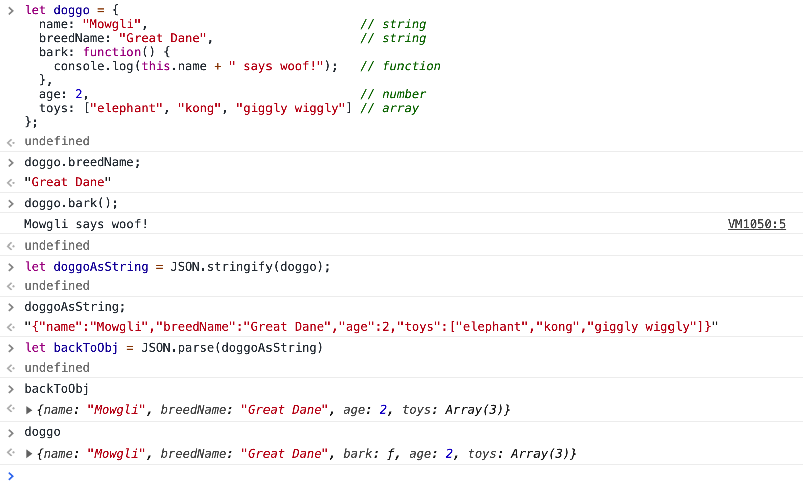
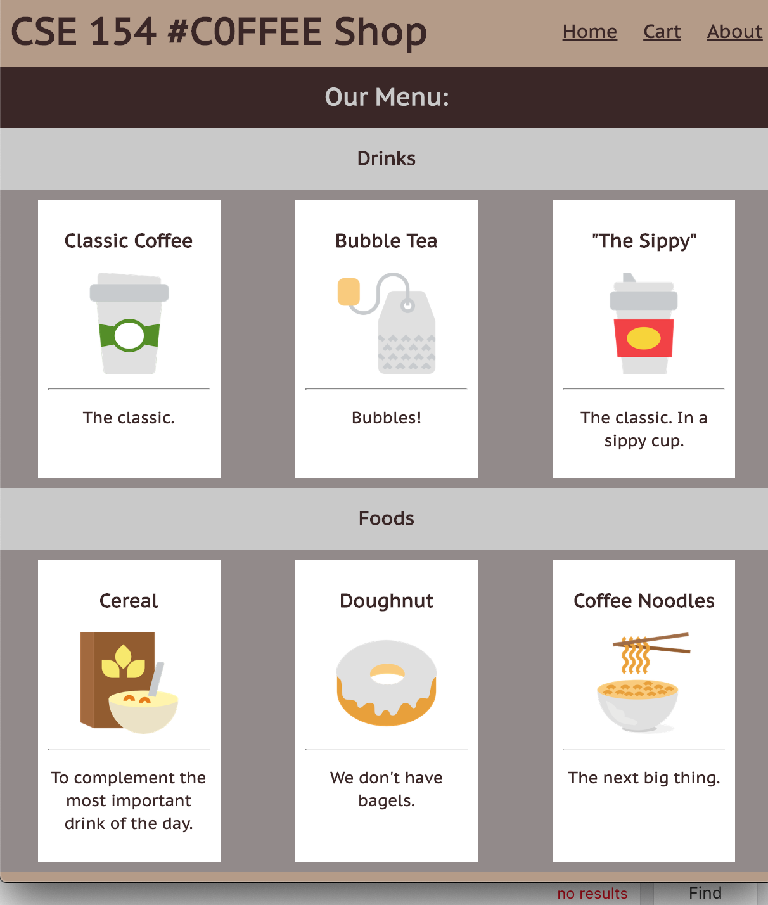
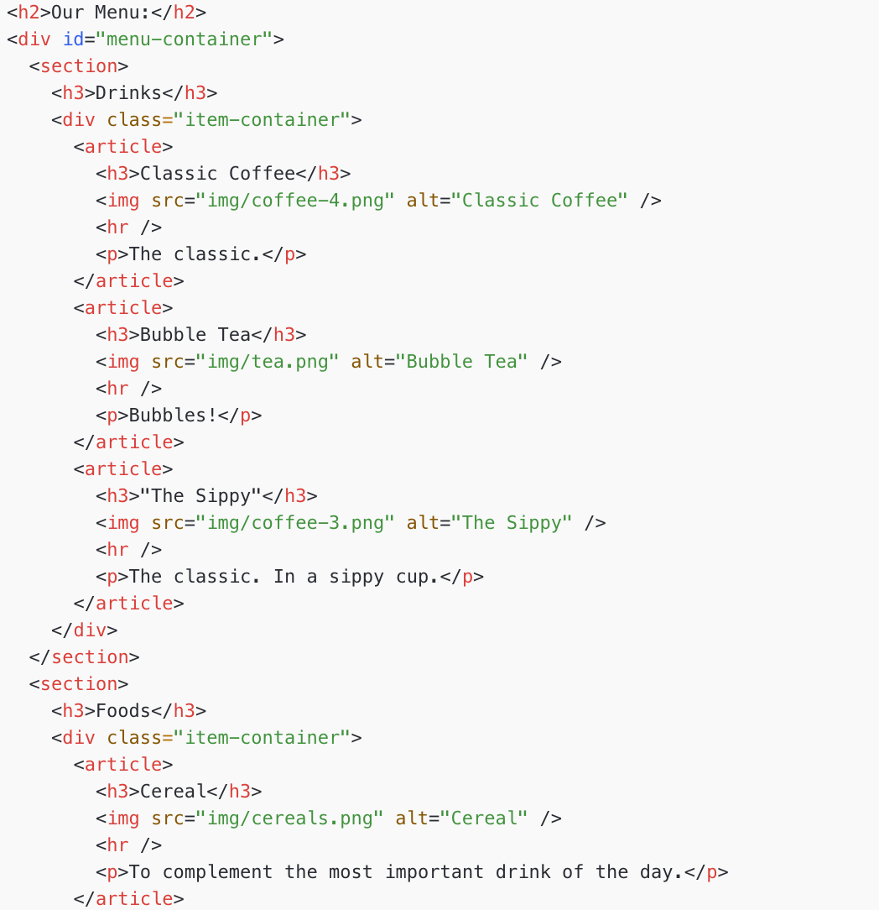
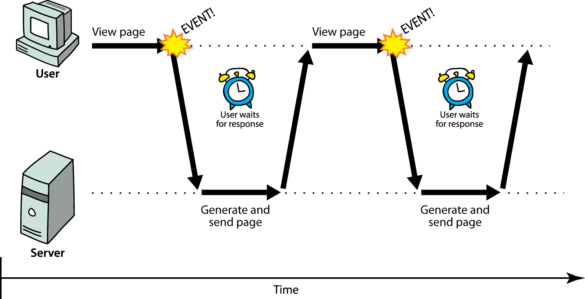

Lecture 11
JSON and Intro to AJAX
Agenda
JSON - a format for packaging data
Using JSON to generate webpages
Using JSON to request/receive data
Preview of promises/fetch
- JSON
- JavaScript Object Notation
A data format that represents data as a set of JavaScript objects invented by JS guru Douglas Crockford of Yahoo! natively supported by all modern browsers (and libraries to support it in old ones)
But first... JavaScript objects
let myobj = {
fieldName1: value1,
...
fieldName: value
};JS (example)
In JavaScript, you can create a new object without creating a "class" like you do in Java
let bestCourse = {
dept : "CSE",
code : 154,
qtr : "19su",
sections : ["AB", "AC", "AD", "AE"]
};You can add properties to any object even after it is created:
bestCourse.mascot = "Mowgli Hovik";JS (example)
Example of JS Object
let doggo = {
name: "Mowgli", // string
breedName: "Great Dane", // string
bark: function() {
console.log(this.name + " says woof!"); // function
},
age: 2, // number
toys: ["elephant", "kong", "giggly wiggly"] // array
};
console.log(doggo.toys[1]); // kong
doggo.bark(); // Mowgli says woof!
console.log(doggo["breedName"]); // Great Dane
console.log(doggo.breedName]); // Great DaneJS (example)
An object can have methods (function properties) that refer to itself as this
can refer to the fields with .fieldName or
["fieldName"] syntax
We don't create JS Objects in CSE 154 programs, but you can find more info here.
Examples of JS objects we've seen so far
- DOM elements
document,window
JavaScript Objects vs. JSON
JSON is a way of representing objects, or structured data.
(The technical term is "serializing" which is just a fancy word for turning an object into a savable string of characters)
Browser JSON methods:
-
JSON.parse( /* JSON string */ )-- converts JSON string into Javascript object -
JSON.stringify( /* Javascript Object */ )-- converts a Javascript object into JSON text
Demo converting JS Object to String and JSON
JSON limitations
JSON can't handle certain data types, so these things just fall out of the object if you try to make JSON strings out of them:
- Function
- Date
- RegExp
- Error
Since JSON is ideal for communicating across different types of systems, you can't put Javascript functions in JSON. Other languages wouldn't be able to read JSON effectively if it had Javascript code in it.
(This is also why Dates and RegExps can't go into the JSON object -- other languages wouldn't know how to interpret them for what they are.)
There are a few other JSON rules which you can get more details in the reading.
Numerous validators/formatters available, eg JSONLint
JSON Exercise
Consider the JSON data at the right. Write each statement to get:
- The name of the customer
- The number of meals returned
- The status of the fish
- The last meal object in the array
let data = {
"name": "Jo Smith",
"items": [
{ "fish": "fishy-smelling" },
{ "cheesecake": "a bit burnt" },
{ "chips": "These are computer chips." }
],
"gift": "hamburger",
"table-number": 20
};JSON
Answers
let name = data.name;
// name === "Jo Smith"
let mealCount = data["meal-status"].length;
// mealCount === 4
let fishStatus = data["meal-status"][0]["fish"];
// fishStatus === "fishy"
let lastItem = data.items[data.items.length];
// lastItem = { "chips" : "These are computer chips." }
JS
A Few Other Notes
What if you want to loop through all categories in the following object?
Sometimes, you'll want to loop through a collection of keys.
let menu = {
"categories" : {
"Drinks" : ["Coffee", "Tea", "Espresso"],
"Foods" : ["Cereal", "Toast"]
}
}JSON
You can use Object.keys(obj) to get an array of keys (strings)
You can also use for (let key of obj) { ... } to loop through a collection.
let categories = Object.keys(menu.categories); // ["Drinks", "Foods"]
for (let category of categories) {
console.log(category); // e.g. "Drinks"
console.log(menu.categories[category]); // e.g. ["Coffee", "Tea", "Espresso"]
}JS
So what is JSON used for?
On your own website, it can be used to represent data to generate webpages dynamically
JSON data also comes from many sources on the web:
- web services use JSON to communicate
- web servers store data as JSON files
- databases sometimes use JSON to store, query, and return data
JSON is the de facto universal format for exchange of data
Using JSON for Dynamic Webpages
Return to the CSE 154 Cafe!
Initial Page
What are the limitations of having everything in the HTML for a website with items/products like a cafe?
Part 1: Using JSON as a variable in menu-populator.js
Example menu.json
"use strict";
(function() {
let menu = {
"categories" : {
"Drinks" : [
{ "name" : "Classic Coffee", "description" : "The Classic.",
"image" : "img/coffee-4.png", "in-stock" : true },
{ other drinks... }
],
"Foods" : [ { other foods... } ]
},
};
window.addEventListener("load", populateMenu);
function populateMenu() {
let categories = Object.keys(menu);
for (let category of categories) {
let categorySection = genCategorySection(category);
let div = gen("div");
div.classList.add("item-container");
for (let i = 0; i < categories[category].length; i++) {
let itemData = categories[category][i];
if (itemData["in-stock"]) {
div.appendChild(genItemArticle(itemData));
}
}
}
categorySection.appendChild(div);
id("menu-container").appendChild(categorySection);
}
// rest of program ...
})();JS (partial)
But what's wrong with putting the JSON as a module-global in our JS?
What if we want to feature different menus?
What if other websites want to use the menu data?
Part 2: Fetching JSON from the web
- What kind of data can we get from the internet?
- How do we request data from the internet?
- What happens when something goes wrong on the internet?
- Can you trust everything you find on the internet?
LET's FETCH ALL THE DATA!!!!!
A ton of examples
Hold your horses
While we are still using JS with JSON, these are new questions that we have to consider.
Data is fun. It's powerful. It drives the modern society. But with great power, comes great responsibility.
What we learn these next few lectures will be simple to code, but will take some time to conceptualize.
Synchronous requests
Why are synchronized requests are problematic?
Your code waits for the request to completely finish before proceeding.
It is easier to program for synchronous behavior, but the user's entire browser LOCKS UP until the download is completed, which is a terrible user experience (especially if the page is very large or slow to transfer)
Asynchronous Programs

We've seen asynchronous requests with setTimeout and setInterval
This is a good transition to fetching data
Timer callback functions are guaranteed* to execute after delayMs
Fetch (AJAX) callback functions are not guaranteed to execute after a certain number of seconds, and have two possible states:
- Success ("resolved")
- Failure ("rejected")
Visualization of AJAX
Modified from Quora: What is Asynchronous JavaScript on a Website
Which picture depicts "synchronous" fetch calls and which depicts "asynchronous" fetch calls?
What is the total time it takes to do the 5 requests in each case?
Visualization of fetch calls - answer
Suppose...
We knew how to get this JSON from a server instead of storing it in a variable in our client-side JS
What are new potential issues?
- There is no way to now how long the server will take the respond
- Will it even respond?
We need some way to wait for a server to respond and do something with the data afterwards (and handle uncertainty).
Naive Approach: While Loop
makeRequestToServer(url);
while (serverHasNotResponded()) {
// do nothing here, page is frozen
}
let jsonData = getServerResponse().json();JS (psuedocode)
What is the issue with this?
- It stops execution of the JS
- It will freeze the page - other events like clicking will not be called since this will never finish.
Callbacks to the Rescue!
makeRequestToServer(url, function(response) {
// function to callback when server is done processing/responding
let jsonData = response.json();
});
}JS (psuedocode)
This does not stop execution!
The callback is run only when the server (from url) is done responding, so there is no halting execution of other parts of your JS (just like setInterval/setTimeout!)
What if we wanted to make multiple requests?
makeRequestToServer(firstUrl, dataToServer, function(response1) {
// function to call when server is done responding
let jsonData = JSON.parse(response1);
processResponse1(jsonData, function(processedData1) {
getUserInput(processedData1, function(userReponse) {
makeRequestToServer(secondUrl, userReponse, function(response2) {
processResponse2(response2, function(processedData2) {
// Do something with processedData2.
});
});
});
});
}JS (psuedocode)
Code is very confusing and hard to follow the logical flow of execution and data
What if we could attach callback functions for each step like a pipeline to be easier to follow?
Example with a Cafe API
To ask for data, we will need URL's to request from.
Suppose we had an API we could request JSON from for our Cafe.
To get categories, we would use /getCategories appended to the URL, which
returns an array of strings.
To get items for a category, we would use /getItems/<categoryName>
to get an array of objects for each item.
This is pretty similar to the menu variable we used
in our JS! But in this API, the second request (to get item data) depends on the first (category names).
Using Callbacks to Handle Asynchronous Dependencies
function fetchAndPopulateMenu() {
const URL = “https://path-to-cafe-api”;
fetchCallback(url + "/getCategories", function(categories) {
for (let i = 0; i < categories.length; i++) {
let categorySection = genCategorySection(categories[i]);
fetchCallback(url + "/getItems/" + categories[i], function(itemList) {
filterInStockItems(itemList, function(inStockItems) {
for (let i = 0; i < inStockItems.length; i++) {
categorySection.append(genItemData(inStockItems[i]));
}
});
});
}
});
}JS (pseudo-code)
... Callbacks help ensure we have the data before using it, but this isn't easy to read.
What if we were to modify our code? What about handling request errors? It will only get more nested.
Friday
Promises and Fetch to the Rescue!
Fetching data from public API's (NASA, Webster Dictionary, Movie DB, etc.)